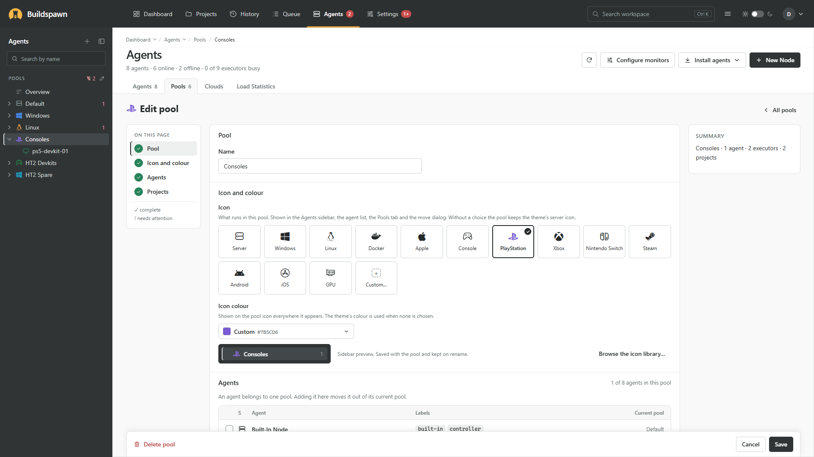
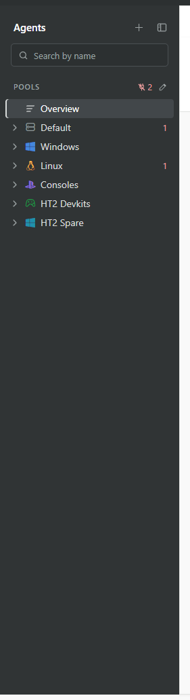

Pools
A pool is a group of agents that serves a set of projects. Pools keep console builds on devkits, Windows builds on Windows machines, and so on. Each pool can have its own icon and colour.
How pools work
- Every agent belongs to exactly one pool.
- A pool has a list of projects. Its agents run builds only of those projects.
- The Default pool is special: its agents run every build configuration that is not assigned to a pool.
- A build of a project that belongs to a pool waits in the queue until an agent of that pool is free.
- You can assign a single build configuration or a whole project to a pool. A build configuration in an assigned project can use the pool. A build configuration that is assigned to pools can run only on agents of those pools.
- A pool does not replace labels. A build needs an agent that is in a pool its project may use and that meets its label expression and requirements (see Labels and agent requirements).
- A new agent that you create with New Node, or that an administrator approves, joins the pool you pick, or the Default pool.
- Personal machines (see Personal agents) are never moved by pools or the scheduler.
Create a pool
- Open Agents and click the Pools tab.
- Click Create pool.
- Type a name, for example
Consoles. - Choose an icon and a colour (see below).
- Add the projects whose builds the pool should run, and the agents that belong to it.
- Click Save.
To change a pool later, click its name in the side panel or on the Pools tab. The pool page has the same settings, plus an Automation card from the Pool Scheduler and Delete pool at the bottom. Renaming or deleting a pool also updates the scheduler's moves and rules.
Icons and colours

An icon shows at a glance what runs in a pool.
- On the pool page, find Icon and colour.
- Pick an Icon: Server, Windows, Linux, Docker, Apple, Console, PlayStation, Xbox, Nintendo Switch, Steam, Android, iOS or GPU. Custom… lets you pick any icon from the built-in icon library.
- Pick an Icon colour from the list, or choose Custom and enter any colour. Without a choice, the theme's colour is used.
- Click Save.
Without an icon, the pool keeps the plain server icon. The icon and colour appear everywhere the pool does:
- the side panel of the Agents pages;
- the Agent column of the agent list;
- the Pools tab and the Pool Scheduler board;
- the pool page;
- the Move to pool dialog.
The sidebar

On every Agents page, the panel on the left lists your pools.
- Overview opens the agent list.
- Click a pool's name to open its page. Click the arrow before it to show its agents.
- Each agent shows its state: green when idle, a busy count such as 1/2 (busy executors of all executors) while it builds, and red, greyed out, when offline.
- A red number beside a pool counts its offline agents. The number at the top, beside POOLS, counts all offline agents.
- Search by name filters pools and agents.
- The pencil beside POOLS and the + at the top help you manage pools and agents.
Move an agent to another pool
There are three ways:
- On the Agents page, open the row menu ⋯ and choose Move to pool…. See The Agents page.
- On the agent's own page, under Agent pool, click Move to pool….
- On the Pool Scheduler board, drag the agent to another pool. See The Pool Scheduler.
To move agents automatically, at set times or when builds wait, use the Pool Scheduler.
Delete a pool
On the pool page click Delete pool, or use the ⋯ menu of the pool on the Pools tab. Buildspawn asks Delete pool NAME? and explains: Its agents move to the Default pool and its projects can then run on any agent of the Default pool. The Default pool cannot be deleted, renamed or given a name that is already used. Names must not be empty.
Borrowed agents
An agent that the Pool Scheduler has lent to another pool is shown as borrowed with the pool it came from and the rule that borrowed it. It is not saved as a member of the pool it is in now, so saving the pool does not undo the loan (see The Pool Scheduler).
Why a build waits
The queue and the Compatible Agents tab of a build configuration name the pool of every agent that was left out, for example Not in a pool assigned to this project (pool: Windows).
Tips
- Name pools after what they build, such as
ConsolesorLinux servers, not after rooms or people. - Give each platform pool its brand icon. It makes the agent list much easier to scan.
- Keep at least one agent in the Default pool, so build configurations without a pool can still run.